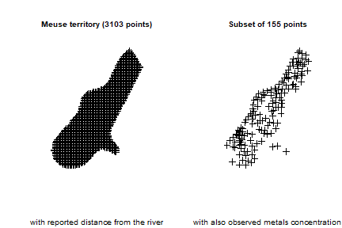
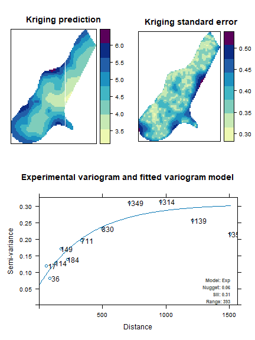
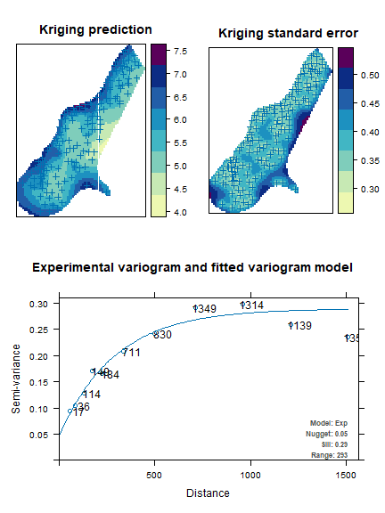
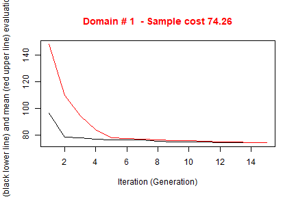
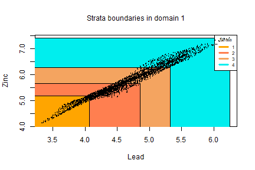
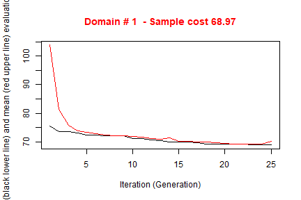
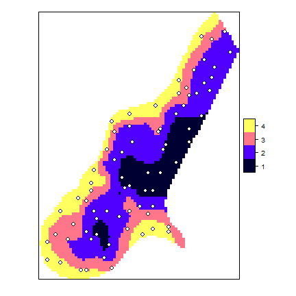

vignettes/spatial.Rmd
spatial.RmdLet us suppose we want to design a sample survey with target variables, each one of them correlated to one or more of the available frame variables.
When frame units are georeferenced or geocoded, the presence of spatial auto-correlation can be investigated. This can be done by executing for instance the Moran test on the target variables: if the null hypothesis is rejected (i.e. the hypothesis of the presence of spatial auto-correlation is accepted) then we should take into account also this variance component.
As indicated by de Gruijter et al. (2016) and de Gruijter et al. (2019), in case is the target variable, omitting as negligible the fpc factor, the sampling variance of its estimated mean is:
We can write the variance in each stratum as:
The optimal determination of strata is obtained by minimizing the quantity :
Obviously, values are not known, but only their predictions , obtained by means of a model (for instance a regression or a kriging model), together with the variances of their prediction errors . Assuming that the predictions are unbiased and that the errors are uncorrelated with the predictions (as for a well-calibrated model), de Gruijter et al. (2015, Eq. 10) and de Gruijter et al. (2016, Eq. 15) show that the model expectation of , conditional on the predictions, is
that can be substituted to in Equations @ref(eq:eq2) and @ref(eq:eq3). The term compensates for the levelling (smoothing) effect of the predictions, whose variance is smaller than that of the true values. The spatial auto-correlation component is contained in the term .
Note. de
Gruijter et al. (2015, Eq. 11) and de Gruijter et al. (2019,
Eq. 2) also divide the first term by the coefficient of
determination
of the prediction model, in order to correct for the levelling effect.
Under the assumptions above this correction is already made by the error
variances, so that applying both counts the error variance twice:
averaging over the pairs of units,
.
From this version on, SamplingStrata uses Equation @ref(eq:eq5) by
default (parameter fitting = 1). The two corrections are
alternatives:
fitting = 1;fitting equal to the
of the prediction model (computed as
,
preferably on validation data) and prediction-error variances set to
zero in the frame.Using fitting < 1 together with positive
prediction-error variances is rejected: the functions stop with an
error. If only the
of the prediction model is known, the additive correction can still be
used, with fitting = 1 and a constant prediction-error
variance
in the frame. On average over the population this gives the same total
variance as the rescaling correction, but within the strata it does not
assume that the stratification can remove the error variance, as the
rescaling
does (when the predictions in a stratum are almost constant, the
rescaled variance goes to zero, while the error variance remains).
The covariance between the prediction errors of two distinct units is modelled as
so that
where:
range) and
(parameter nugget) describe the spatial correlation of the
prediction errors, and are obtained from their variogram;kappa) depends on how the range
is defined, as explained in Section @ref(kappa);With range = 0, or nugget = 1, there is no
spatial correlation, and Equation @ref(eq:eq7) reduces to the
non-spatial case. Since the correlation is non-negative, with
fitting = 1 the spatial component can only reduce the
variance in the strata.
The exponential variogram of the prediction errors is
and the corresponding correlation between two units at distance is . Unlike the spherical model, the exponential model never reaches its sill: the parameter is a scale parameter, not a distance beyond which the correlation is zero. At distance the correlation is still ; it falls to 5% at , the distance conventionally called practical (or effective) range.
Software and papers report either of the two quantities as “range”.
The parameter kappa makes the formula independent of the
convention: the correlation is computed as
,
so that
The value given as range is |
Typical source | kappa |
|---|---|---|
| the parameter of the exponential model |
gstat::fit.variogram,
automap::autofitVariogram / autoKrige (column
range of the Exp row of the fitted model) |
1 |
| the practical range (), i.e. the distance at which the variogram reaches about 95% of the sill | software or papers that report the practical range, a range read on a variogram plot as the distance at which it levels off, Ospats and de Gruijter et al. (2019) (who use ) | 3 |
With kappa = 1 and
,
or with kappa = 3 and
,
the correlation is the same. Using the wrong value changes the distance
of correlation by a factor of 3: kappa = 1 with the
practical range makes the errors correlated over a distance three times
too long, and therefore overstates the reduction of the variance due to
the spatial component; kappa = 3 with the parameter
understates it.
Other values are admissible: in general, if range is the
distance at which the correlation falls to
,
then
(for instance
for 10%). Since 1 and 3 are the usual conventions, a value of
kappa other than 1 and 3 gives a warning; a value equal to
or lower than 0 gives an error, because with
the errors would be perfectly correlated at any distance, and with
the correlation would increase with the distance.
The default value of kappa is 3, for compatibility with
the previous versions of the package. When the range is taken from
gstat or automap, as in the example below,
kappa = 1 must be set explicitly.
If the variogram of the prediction errors is better described by
another model, the exponential model should be fitted anyway, since it
is the one assumed by Equation @ref(eq:eq6). As an approximation, a
spherical model with range
(the distance at which it reaches the sill) can be translated into an
exponential model with similar practical range by using
range
and kappa = 3.
The range and the nugget should be estimated on the variogram of the prediction errors, i.e. of the out-of-sample residuals (observed minus predicted values, from cross-validation or independent validation data): at the calibration points the residuals of a kriging model are close to zero and not informative about the prediction error. When the variances vary much across the units, the variogram should be computed on the standardised residuals , whose structure is the one assumed in Equation @ref(eq:eq6).
To summarize, when frame units can be geo-referenced, the proposed procedure is the following:
kappa according to the
definition of the range (1 for the range parameter, 3 for the practical
range);fitting = 1.In order to illustrate the “spatial” method, we make use of a dataset generally employed as an example of spatially correlated phenomena (in this case, the concentration of four heavy metals in a portion of the river Meuse). This dataset comes with the library “sp”:
library(sp)
# locations (155 observed points)
data("meuse")
# grid of points (3103)
data("meuse.grid")
meuse.grid$id <- c(1:nrow(meuse.grid))
coordinates(meuse)<-c("x","y")
coordinates(meuse.grid)<-c("x","y")
We analyse the territorial distribution of the lead and zinc concentration, and model (by using the universal kriging) their relations with distance from the river, using the subset of 155 points on which these values have been jointly observed. We fit an exponential variogram, consistent with the exponential correlation function of Equation @ref(eq:eq6):
## [using universal kriging]
plot(kriging_lead,sp.layout = NULL, justPosition = TRUE)
## [using universal kriging]
From the fitted variograms we take the range parameter
of the exponential model (to be used with kappa = 1) and
the relative nugget
:
kriging_lead$var_model## model psill range
## 1 Nug 0.05972538 0.0000
## 2 Exp 0.24751270 392.6089
range_lead <- kriging_lead$var_model$range[2]
nugget_lead <- kriging_lead$var_model$psill[1] / sum(kriging_lead$var_model$psill)
kriging_zinc$var_model## model psill range
## 1 Nug 0.04525859 0.0000
## 2 Exp 0.24392958 292.6641
range_zinc <- kriging_zinc$var_model$range[2]
nugget_zinc <- kriging_zinc$var_model$psill[1] / sum(kriging_zinc$var_model$psill)
c(range_lead = range_lead, nugget_lead = nugget_lead)## range_lead nugget_lead
## 392.6088890 0.1943945
c(range_zinc = range_zinc, nugget_zinc = nugget_zinc)## range_zinc nugget_zinc
## 292.6641200 0.1565022For simplicity, in this example range and nugget are taken from the
variograms fitted by the kriging models, i.e. from the residuals of the
trend on the distance from the river. In real applications they should
be estimated on the variogram of the out-of-sample prediction errors
(for instance from the cross-validation residuals given by
gstat::krige.cv), as explained above. The fitting parameter
is not needed: the prediction-error variances produced by kriging are in
the frame, so the additive correction (fitting = 1, the
default) applies.
Using these kriging models, we are able to predict the values of lead and zinc concentration on the totality of the 3,103 points in the Meuse territory:
df <- NULL
df$id <- meuse.grid$id
df$lead.pred <- kriging_lead$krige_output@data$var1.pred
df$lead.var <- kriging_lead$krige_output@data$var1.var
df$zinc.pred <- kriging_zinc$krige_output@data$var1.pred
df$zinc.var <- kriging_zinc$krige_output@data$var1.var
df$lon <- meuse.grid$x
df$lat <- meuse.grid$y
df$dom1 <- 1
df <- as.data.frame(df)
head(df)## id lead.pred lead.var zinc.pred zinc.var lon lat dom1
## 1 1 5.517159 0.2083630 6.712998 0.2151660 181180 333740 1
## 2 2 5.550284 0.1791932 6.766572 0.1832443 181140 333700 1
## 3 3 5.494689 0.1884051 6.682140 0.1941760 181180 333700 1
## 4 4 5.396745 0.1974743 6.544145 0.2043451 181220 333700 1
## 5 5 5.592130 0.1436757 6.837125 0.1404987 181100 333660 1
## 6 6 5.531484 0.1555376 6.744487 0.1562711 181140 333660 1The aim is now to produce the optimal stratification of the 3,103 points under a precision constraint of 1% on the target estimates of the mean lead and zinc concentrations:
library(SamplingStrata)
frame <- buildFrameSpatial(df=df,
id="id",
X=c("lead.pred","zinc.pred"),
Y=c("lead.pred","zinc.pred"),
variance=c("lead.var","zinc.var"),
lon="lon",
lat="lat",
domainvalue = "dom1")
cv <- as.data.frame(list(DOM=rep("DOM1",1),
CV1=rep(0.01,1),
CV2=rep(0.01,1),
domainvalue=c(1:1) ))To this aim, we carry out the optimization step by indicating the
method spatial, with the range and the relative nugget of the
two variograms (fitting is omitted, i.e. equal to 1):
set.seed(1234)
solution <- optimStrata (
method = "spatial",
errors=cv,
framesamp=frame,
iter = 15,
pops = 10,
nStrata = 5,
range = c(range_lead, range_zinc),
nugget = c(nugget_lead, nugget_zinc),
kappa = 1,
writeFiles = FALSE,
showPlot = FALSE,
parallel = FALSE)##
## Input data have been checked and are compliant with requirements
##
## *** Domain : 1 1
## Number of strata : 3103
## *** Sample cost: 74.26154
## *** Number of strata: 4
##
## *** Sample size : 74
## *** Number of strata : 4
## ---------------------------
framenew <- solution$framenew
outstrata <- solution$aggr_strataobtaining the following optimized strata:
plotStrata2d(framenew,outstrata,domain=1,vars=c("X1","X2"),
labels=c("Lead","Zinc"))
| Stratum | Population | Allocation | SamplingRate | Bounds Lead | Bounds Zinc |
|---|---|---|---|---|---|
| 1 | 505 | 12 | 0.02339074 | 3.33446915108525-4.07490542620039 | 4.12033872416343-5.16581340104563 |
| 2 | 1162 | 27 | 0.02321401 | 4.06084301390357-4.86031443361745 | 5.00207342087139-5.659847980331 |
| 3 | 757 | 18 | 0.02403652 | 4.47910444164607-5.31840588061593 | 5.6625970964073-6.27445923668798 |
| 4 | 679 | 17 | 0.02544755 | 4.86913230697994-6.24785534081567 | 6.27536305596635-7.39610824963638 |
that can be visualised in this way:
frameres <- SpatialPointsDataFrame(data=framenew, coords=cbind(framenew$LON,framenew$LAT) )
frameres2 <- SpatialPixelsDataFrame(points=frameres[c("LON","LAT")], data=framenew)
frameres2$LABEL <- as.factor(frameres2$LABEL)
spplot(frameres2,c("LABEL"), col.regions=bpy.colors(nlevels(frameres2$LABEL)))
We can now proceed with the selection of the sample, using the function ‘selectSampleSpatial’ (which is a wrapper of function ‘lpm2_kdtree’ in package ‘SamplingBigData’, see Lisic and Grafström (2018)), in order to ensure a spatially balanced sample:
s <- selectSampleSpatial(framenew,outstrata,coord_names=c("LON","LAT"))##
## *** Sample has been drawn successfully ***
## 74 units have been selected from 4 stratawhose units are so distributed in the territory (sampled points in white, over the optimized strata):
samp <- SpatialPointsDataFrame(data=s, coords=cbind(s$LON,s$LAT))
spplot(frameres2, c("LABEL"), col.regions=bpy.colors(nlevels(frameres2$LABEL)),
sp.layout = list("sp.points", samp, pch=21, col="black", fill="white", cex=1))
In an interactive R session, the selected units can also be displayed on an OpenStreetMap background with the package mapview (the Meuse coordinates are in the Dutch national grid, EPSG:28992):